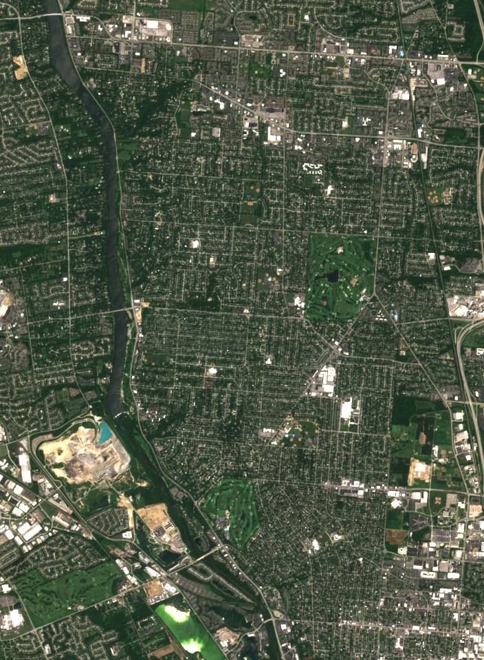
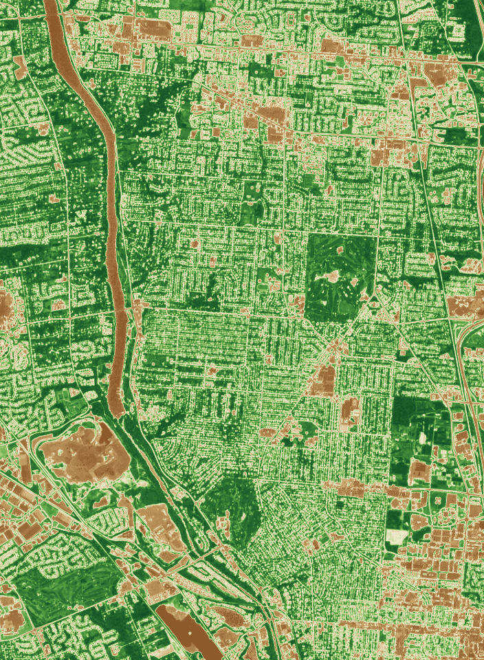
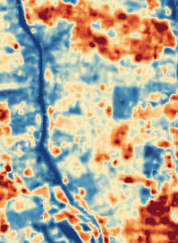

Text → image search · EuroSAT test photos
96% right first try
50 caption searches over 4,050 unseen photos, 10 land types (so chance is 10%). Ahead
Ask satellite photos in plain English, then see which spots run hottest. Built for the urban-forestry staff of Upper Arlington, Ohio.
Sentinel-2 photographs all land every 5 days. Nobody can read it all.
Upper Arlington, Ohio. Its forestry staff need to know where to plant next.
Squares of 640 m, each searchable in English.
We made satellite photos searchable in plain English, and used them to show where trees would cool a city most.
Words with a dotted underline explain themselves: hover or tap them.
Type what you are looking for. Get the best-matching photos. The number under each photo is a similarity score, not a percentage.
How to use: click one of the example buttons, or type your own words and press Search. Glowing squares on the map show where the matches are.

Two satellite measurements, side by side: greenness (NDVI) and surface heat. One summer morning in Upper Arlington.
In plain words: places with more trees are cooler. Scroll to see exactly where the hot, treeless spots are. That is where planting helps most.


Sentinel-2, 1 Aug 2025. Canopy, homes, the Scioto River, parking lots.
NDVI: dark green = dense leaves, tan = roofs and asphalt.
Landsat 8, 9 days earlier. Ground surface temperature, not air.
Greener squares run cooler. The least-green third is 4.1 °C hotter than the greenest (164 squares).
A correlation, not proof of cause. Heat and greenness are satellite measurements; the AI's job is finding and labelling places in words.
Run it on any city: heat map, land cover, and a ranked list of where to plant.
Draw a box anywhere. Get live satellite heat, greenness and land cover, plus where to plant first.
Unseen test data only. Every baseline next to our score. Weak results included.
In plain words: longer bars are better. Grey bars are the simple guesses we have to beat. The blue bar (ResNet-18) is a model trained the normal way, for comparison.
50 caption searches over 4,050 unseen photos, 10 land types (so chance is 10%). Ahead
Our own hand-labelled Ohio photos, far from the European training data. Always answering “Residential” gets 62%. Tie
Prototype, not a land-use determination.
Behind ResNet-18 Far ahead of the baselines
ResNet-18 is trained on these exact labels; we train nothing but one rotation. The trade: 17 points of accuracy, in exchange for search in any words. ResNet-18 cannot answer “parking lots near the river” at all.
Real mistakes from our own test runs, and why they happen.
In plain words: no AI is perfect. Knowing where it goes wrong tells you when to double-check it.
Rule: all of the 50 hand-labelled tiles where the model's answer differs from ours. Nothing hand-picked.
Not a land cover, yet it still returns tiles. It can't say “I don't know”.
In plain words: a photo of a forest and the word “forest” describe the same thing. So an AI that learned from photos and an AI that learned from words should end up with the same idea of a forest.
In 2024, MIT researchers (Huh, Cheung, Wang & Isola) published “The Platonic Representation Hypothesis”. It argues that as AI models grow, they all drift toward the same inner picture of the world, whether they learned from images or from text.
The Greek philosopher Plato said we only see shadows of the real world, like prisoners watching shadows on a cave wall. Photos and sentences are both shadows of one reality, so AIs trained on either should rebuild the same thing.
If that's true, a photo AI and a word AI should line up with just a rotation: no retraining at all. We tested it on satellite photos. It worked: 96% of word searches found the right land type first.
Dots are real satellite photos placed by the picture AI (DINOv2). Stars are captions placed by the word AI (MiniLM). Scroll to rotate.
In plain words: each AI turns things into points on a map (an embedding). We spin one map until each photo sits next to the words that describe it. That spin is the Procrustes rotation.
Two separate worlds. Neither model has seen the other. A tile matches its own caption at 0.01.
One matrix W, solved by SVD on EuroSAT image–caption pairs. It only turns the space. Both models stay frozen.
Each land type lands next to its words. Match rises to 0.29.
2-D view of real 384-D vectors (360 test tiles).
In plain words: we never taught either AI anything new. We only found the right way to line them up, then checked it fairly.
W* = argmin ‖XW − Y‖ subject to WᵀW = I W = U Vᵀ, where U Σ Vᵀ = svd(XᵀY)